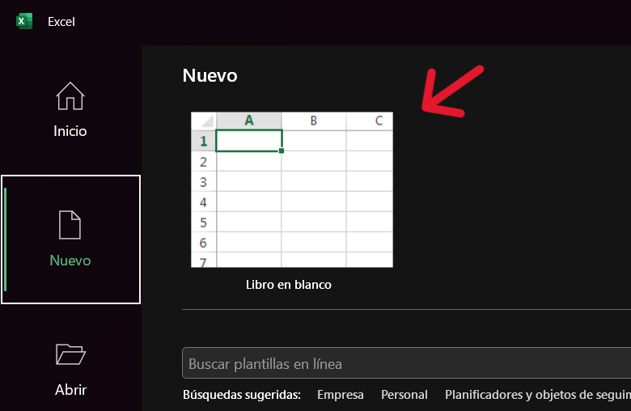

Microsoft Excel
Introducción a Excel
¡Te damos la bienvenida a nuestra guía introductoria de Excel! Nuestro objetivo es proporcionarte la orientación y la ayuda que necesitas para comenzar con confianza y dominar los conceptos básicos. Prepárate para desbloquear el potencial de tus datos y llevar tus habilidades de cálculo al siguiente nivel.
Qué es Excel y para qué se utiliza?
Excel es un programa de hojas de cálculo usado para organizar y analizar datos. Con él, puedes realizar cálculos, crear gráficos y realizar análisis de datos. Es una herramienta fundamental para trabajar con información numérica de manera eficiente. Con Excel podrás realizar:
- Gestión de Finanzas Personales
- Análisis de Datos Empresariales
- Planificación de Proyectos
- Estadísticas y Análisis Académico
- Gestión de Recursos Humanos
- Creación de Informes y Dashboards
- Análisis de Datos Científicos
- Seguimiento de Inventario y Logística
- Muchas más cosas!
Cómo abrir Excel y crear una nueva hoja de cálculo.
-
En sistemas Windows, puedes abrir Excel desde el menú de inicio, haciendo clic en el ícono de Excel de la lista de tareas
o buscándolo en el menú de búsqueda. En macOS, puedes abrir Excel desde la carpeta de Aplicaciones o desde el Dock.
(ver imágenes)
Windows
macOS
-
Una vez abierto el programa Excel verás una barra lateral en la que podras pulsar en Inicio o en Nuevo
para seguidamente hacer click en Libro en blanco y así crear una nueva hoja de cálculo.
(ver imágenes)
Crear hoja de cálculo desde Home
Crear hoja de cálculo desde Nuevo
 - Si has seguido los pasos anteriores se abrira una nuevo documento Excel i verás algo similar a esto: (ver imágen)
Navegación por Excel
La interfaz de Excel está compuesta por varias partes, cada una con una función específica. Primero veremos qué caregorías exisisten y, seguidamente nos enfocaremos en las partes más útiles de la interfaz.
Pestaña de Archivo
En esta pestaña, puedes realizar acciones relacionadas con el archivo actual, como abrir, guardar, imprimir y compartir. También puedes configurar opciones de Excel y administrar cuentas.
Pestaña de Inicio
Aquí encontrarás herramientas para dar formato a tus datos, como cambiar el tipo de fuente, el tamaño, el color y aplicar estilos a celdas. También puedes encontrar opciones para copiar, pegar, ordenar y filtrar datos.
Pestaña de Insertar
Esta pestaña te permite agregar diferentes elementos a tu hoja de cálculo, como gráficos, tablas, imágenes, formas y objetos. También puedes insertar hipervínculos y comentarios.
Pestaña de Disposición de página
Aquí puedes ajustar la apariencia de tu hoja de cálculo para la impresión, configurar márgenes, orientación de página, tamaño del papel y agregar encabezados y pies de página.
Pestaña de Fórumulas
Esta pestaña contiene herramientas para insertar, editar y gestionar fórmulas en tus celdas. También puedes encontrar funciones predefinidas y herramientas para auditar fórmulas.
Pestaña de Datos
Aquí puedes realizar operaciones relacionadas con la importación, exportación y manipulación de datos, como ordenar, filtrar, eliminar duplicados y consolidar información.
Pestaña de Revisar
Esta pestaña está diseñada para ayudarte a revisar y corregir tu hoja de cálculo. Puedes agregar comentarios, realizar seguimiento de cambios, proteger tu hoja y comprobar ortografía.

Pestaña de Vista
En esta pestaña, puedes cambiar la forma en que ves tu hoja de cálculo, como cambiar la vista de página, dividir la ventana, congelar paneles y ocultar o mostrar elementos de la interfaz.
Pestaña de Automatizar
Aquí encontrarás herramientas para automatizar tareas repetitivas mediante macros y scripts. Puedes grabar y ejecutar macros para simplificar tu trabajo.
Pestaña de Ayuda
Esta pestaña proporciona acceso a la ayuda y recursos de Excel, incluyendo tutoriales, documentación y enlaces a la comunidad de usuarios.
Fórmulas y Funciones Básicas
Las fórmulas y funciones son la base de Excel y te permiten realizar cálculos y análisis de datos de manera eficiente. A continuación, te presentamos algunas de las fórmulas y funciones más comunes que puedes utilizar en tus hojas de cálculo.
Cómo escribir una fórmula básica.
Para escribir una fórmula en Excel, debes comenzar con el signo igual (=) seguido de la expresión matemática que deseas calcular. Por ejemplo, para sumar dos números, puedes escribir =A1+B1, donde A1 y B1 son las celdas que contienen los números que deseas sumar.
Uso de operadores matemáticos (+, -, *, /).
Excel admite una variedad de operadores matemáticos que puedes utilizar en tus fórmulas, como la suma (+), la resta (-), la multiplicación (*) y la división (/). Estos operadores te permiten realizar cálculos simples y complejos en tus hojas de cálculo.
Funciones básicas: SUMA, PROMEDIO, MÁXIMO, MÍNIMO, CONTAR, etc.
Excel incluye una amplia variedad de funciones predefinidas que te permiten realizar cálculos y análisis de datos de manera rápida y sencilla. Algunas de las funciones más comunes incluyen SUMA, PROMEDIO, MÁXIMO, MÍNIMO, CONTAR, entre otras. Estas funciones te ayudarán a realizar cálculos complejos y a obtener información útil de tus datos.
- SUMA(número1, número2, ..., númeroN): Suma todos los números dados como argumentos.
- PROMEDIO(número1, número2, ..., númeroN): Calcula el promedio de los números dados.
- CONTAR(rango): Cuenta el número de celdas no vacías en un rango.
- MÁXIMO(número1, número2, ..., númeroN): Devuelve el valor máximo de un rango de celdas.
- MÍNIMO(número1, número2, ..., númeroN): Devuelve el valor mínimo de un rango de celdas.
- CONTARA(rango): Cuenta el número de celdas no vacías que contienen valores numéricos en un rango.
- SI(condición, valor_si_verdadero, valor_si_falso): Evalúa una condición y devuelve un valor si es verdadera y otro si es falsa.
- INDICE(rango, fila, columna): Devuelve el valor de una celda en un rango, dadas las coordenadas de fila y columna.
- COINCIDIR(valor_buscado, rango, tipo_de_coincidencia): Devuelve la posición relativa de un valor en un rango.
- CONCATENAR(texto1, texto2, ...): Combina varios textos en uno solo.
Dichas funciones se introducen en:
Formato de Celdas
El formato de celdas en Excel te permite personalizar la apariencia de tus datos, haciéndolos más legibles y atractivos. A continuación, te presentamos algunas de las opciones de formato de celdas más comunes que puedes utilizar en tus hojas de cálculo.
Cambiar el tipo de letra, tamaño y color.
Puedes cambiar el tipo de letra, el tamaño y el color de tus datos para resaltar la información más importante y hacer que tus hojas de cálculo sean más atractivas y fáciles de leer. Para cambiar el formato de fuente, selecciona las celdas que deseas modificar y utiliza las opciones de formato de fuente en la pestaña de Inicio.
Alineación de texto y números.
Puedes alinear el texto y los números en tus celdas para mejorar la legibilidad y la apariencia de tus datos. Excel te permite alinear el contenido de tus celdas en la parte superior, en el centro o en la parte inferior, así como a la izquierda, en el centro o a la derecha. También puedes ajustar la orientación del texto y el espaciado entre líneas.
Formato de números (moneda, porcentaje, fecha, etc.).
Excel te permite aplicar formatos especiales a tus números, como moneda, porcentaje, fecha, hora y texto. Estos formatos te permiten presentar tus datos de manera clara y concisa, facilitando la interpretación de la información. Para aplicar un formato de número, selecciona las celdas que deseas formatear y utiliza las opciones de formato de número en la pestaña de Inicio.
Gestión de Datos
Excel te permite gestionar tus datos de manera eficiente, facilitando la organización, el análisis y la presentación de la información. A continuación, te presentamos algunas de las funciones más útiles de Excel para la gestión de datos.
Copiar y pegar datos.
Puedes copiar y pegar tus datos en Excel para duplicarlos o moverlos a otra ubicación. Para copiar datos, selecciona el rango de celdas que deseas copiar y utiliza las opciones de copiado en la pestaña de Inicio (ver flecha de la imagen). Para pegar datos, selecciona la celda de destino y utiliza las opciones de pegado en la pestaña de Inicio. Puedes pegar tus datos como valores, fórmulas, formatos o enlaces. Tambien puedes utilizar la combinación de teclas Ctrl+C para copiar y Ctrl+V para pegar (en Windows) o Command + C para copiar y Command + V para pegar (en Mac).

Insertar, eliminar y mover filas y columnas.
Puedes insertar, eliminar y mover filas y columnas en tus hojas de cálculo para organizar tus datos de la manera que desees. Para insertar una fila o columna, selecciona la fila o columna adyacente a la que deseas insertar y utiliza las opciones de inserción en la pestaña de Inicio. Para eliminar una fila o columna, selecciona la fila o columna que deseas eliminar y utiliza las opciones de eliminación en la pestaña de Inicio. Para mover una fila o columna, selecciona la fila o columna que deseas mover y arrástrala a la nueva ubicación.
Ordenar y filtrar datos.
Puedes ordenar y filtrar tus datos en Excel para organizarlos y analizarlos de manera eficiente. Para ordenar tus datos, selecciona el rango de celdas que deseas ordenar y utiliza las opciones de ordenación en la pestaña de Inicio. Para filtrar tus datos, selecciona el rango de celdas que deseas filtrar y utiliza las opciones de filtrado en la pestaña de Datos. Puedes filtrar tus datos por valores, colores, iconos y criterios personalizados.
Gráficos Básicos
Los gráficos en Excel te permiten visualizar tus datos de manera clara y concisa, facilitando la interpretación y el análisis de la información. A continuación, te presentamos algunas de las funciones más útiles de Excel para la creación y personalización de gráficos, pero antes de nada, veamos desde donde podemos importar gráficos.
Insertar un gráfico en una hoja de cálculo.
Puedes insertar un gráfico en una hoja de cálculo de Excel para visualizar tus datos de manera clara y concisa. Para insertar un gráfico, selecciona el rango de celdas que deseas graficar y utiliza las opciones de inserción de gráfico en la pestaña de Insertar. Puedes elegir entre varios tipos de gráficos, como columnas, líneas, pastel, barras, áreas, dispersión y más.